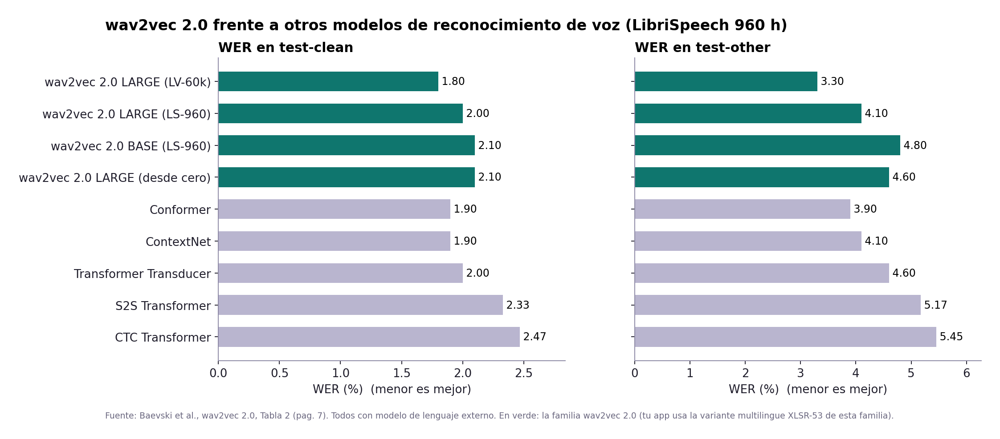
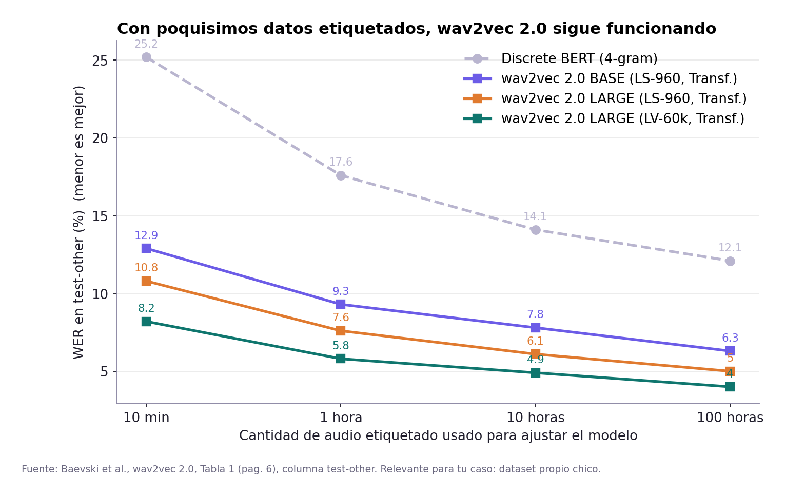
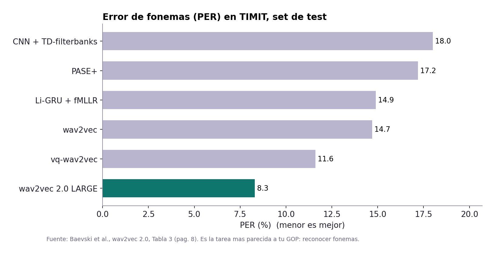
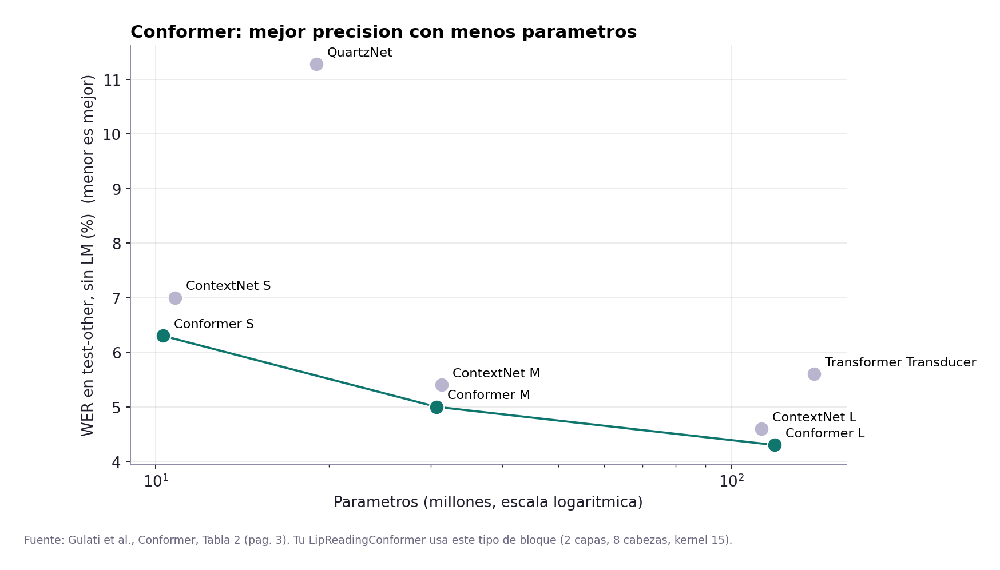
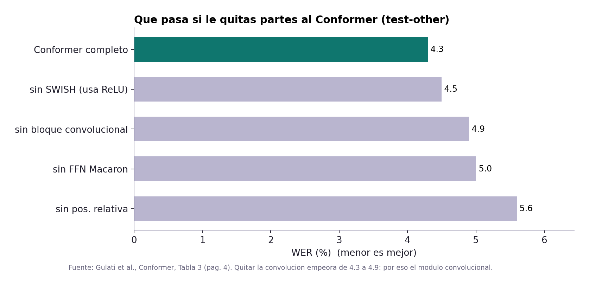
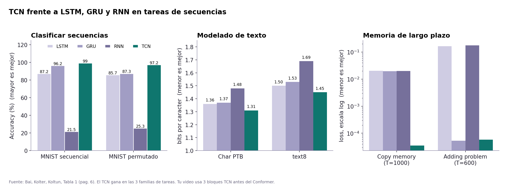
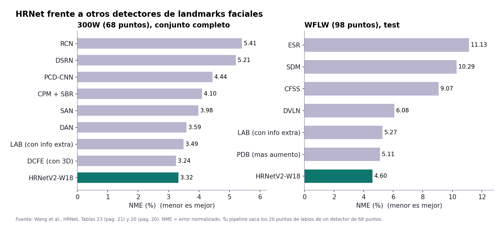
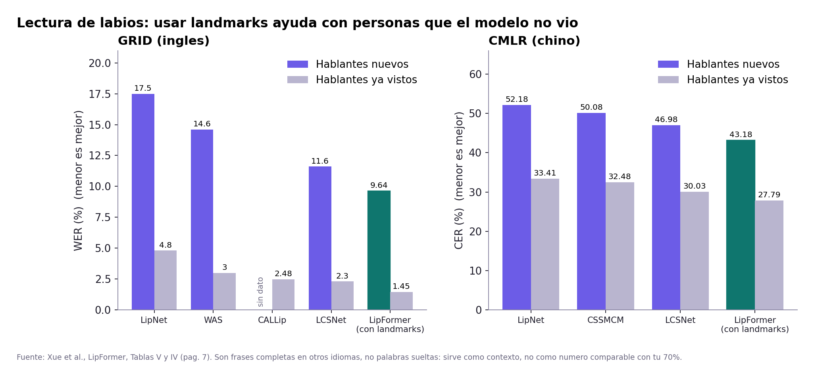
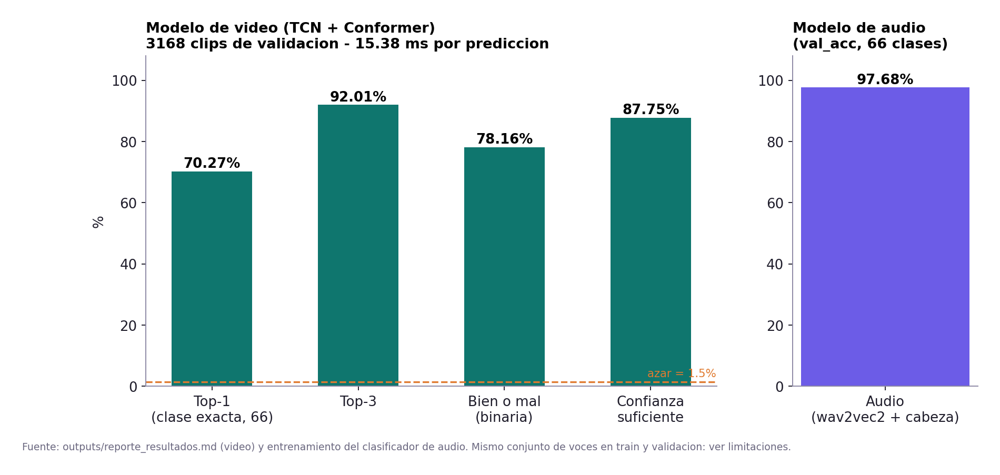

Tus modelos frente a otros
Comparaciones hechas solo con numeros publicados en los papers de tu carpeta de investigacion. No se entreno ni se toco ningun modelo.
wav2vec 2.0 frente a otros modelos de voz
La familia wav2vec 2.0 queda al nivel de los mejores modelos supervisados con la misma cantidad de audio etiquetado, y el LARGE con mas audio sin etiquetar los supera.

Fuente: Baevski et al., Tabla 2, pag. 7 (documentacion/investigacion/2006.11477v3)wav2vec 2.0 con pocos datos etiquetados
Con 10 minutos de audio etiquetado ya baja el error a menos de la mitad que Discrete BERT. Es el caso de un dataset propio chico.

Fuente: Baevski et al., Tabla 1, pag. 6wav2vec 2.0 y reconocimiento de fonemas
En TIMIT (fonemas) reduce el error de 11.6 a 8.3 frente al mejor metodo anterior. Los fonemas son la base de tu GOP.

Fuente: Baevski et al., Tabla 3, pag. 8Conformer: precision contra tamano
A igual tamano, el Conformer tiene menos error que ContextNet y que el Transformer Transducer (139 M).

Fuente: Gulati et al., Tabla 2, pag. 3 (2005.08100v1_conformer)Conformer: que aporta cada parte
Quitar el bloque convolucional sube el error de 4.3 a 4.9, el mayor deterioro por una sola pieza despues de la posicion relativa.

Fuente: Gulati et al., Tabla 3, pag. 4TCN frente a LSTM, GRU y RNN
El TCN gana en clasificacion de secuencias, en modelado de texto y en memoria de largo plazo.

Fuente: Bai, Kolter, Koltun, Tabla 1, pag. 6 (documentacion/Versus/TCN_VS.pdf)HRNet frente a otros detectores de landmarks
Mejor resultado entre los metodos sin informacion extra en 300W y en WFLW. Es el detector que saca los puntos de los labios.

Fuente: Wang et al., Tablas 23 y 20, pags. 21 y 20 (1908.07919v2)Lectura de labios con landmarks
LipFormer, que usa landmarks de labios junto con video, es el mejor tambien con hablantes que no vio en el entrenamiento. Son frases completas en otros idiomas, no es comparable con tu 70%.

Fuente: Xue et al., Tablas V y IV, pag. 7 (2302.02141v1)Tus modelos, con tus resultados
Metricas reales de tus modelos. La validacion usa las mismas voces que el entrenamiento, asi que son optimistas para voces nuevas.

Fuente: outputs/reporte_resultados.md y entrenamiento de train_audio_classifier.py